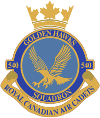
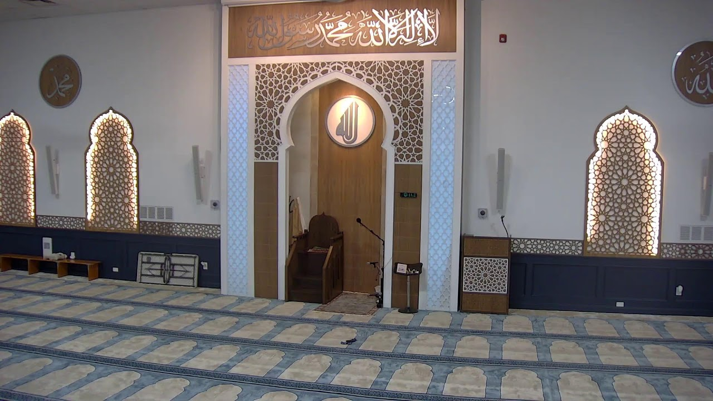
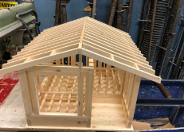
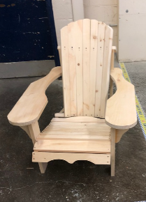

About Me
I'm a First Year Mathematics student at the University of Waterloo with a strong passion for mathematics, computer science, and leadership. I strive to combine logic, creativity, and innovation to build meaningful technologies, and I'm always looking for ways to grow, lead, and make an impact. I've worked with JavaScript, HTML and CSS — creating websites, small games, and utility tools — and I'm currently exploring Unity and Blender to expand my game development abilities. I love combining visual design with code to create interactive experiences, and I plan to dive deeper into AI/ML, algorithms, and software engineering during university.
Education
University of Waterloo
Bachelor of Mathematics (BMath)
2025 – 2030
Accepted into the Honours Mathematics program with a $2,000 entrance scholarship. I plan to major in Computational Mathematics. My focus is on software development, game development, artificial intelligence and machine learning. Activities: Data Science Club, CS Club, Math Soc, Pakistan Student Association, Muslim Student Association.
White Oaks Secondary School

Ontario Secondary School Diploma
2020 – 2025
Completed high school developing strong problem-solving, teamwork, and communication skills. Took initiative in leadership roles and pursued interests in architecture, design, computer science, and advanced mathematics. Earned ~200 volunteer hours. Executive Member, 1UP Architecture and Design Club (2024–2025). Member, Muslim Student Association (2021–2025).
Experience
Waterloo CS & DS Club
Member
Sept 2025 – Present
Expanded technical knowledge across data science and computer science by attending hands-on workshops, hackathons, and guest lectures. Built professional connections with industry engineers including members of Tesla's AI team through networking events and technical discussions.
Hack The North '25
Volunteer
September 2025
Supported Canada's largest hackathon by assisting with event logistics and security across 7 floors, ensuring safe operations for hundreds of participants. Enhanced participant experience while actively networking with hackers and organizers.
540 Golden Hawks Air Cadets

Flight Sergeant
2019 – 2025
6 years of structured training in aircraft systems, aerodromes, drill, and command principles. Delivered presentations on aviation and leadership to junior cadets. Led outdoor training including fire building, tent setup, and survival techniques.
1Up Architecture & Design Club
Logistics Executive
2024 – 2025
Served as Logistics Executive for the 1UP Architecture and Design Club, coordinating events and supporting the club's design initiatives throughout the school year.
ICNA Relief Canada
Youth Leadership Program
July – August 2024
Led collaborative planning and execution of a fundraising initiative, raising $15,000 CAD by coordinating event logistics, outreach, and teamwork with a 6-person team. Strengthened leadership, communication, and project coordination skills.
HawkHacks '24
Hackathon Participant
May 2024
Participated at HawkHacks 2024 at Wilfrid Laurier University, collaborating in a 36-hour national hackathon and gaining exposure to university-level project development.
Volunteering
Ramadan at Al Falah Mosque

150+ Volunteer Hours
2023 & 2024
Dedicated over 100 volunteer hours supporting my local mosque during Ramadan. Responsibilities included distributing water and dates for iftar, handing out food packages after nightly prayers, coordinating crowd flow, and assisting with on-site logistics.
ICNA Fest at Al Falah
20 Volunteer Hours
2023 & 2024
Volunteered at ICNA Fest assembling tents, arranging chairs, supervising bouncy castles, and assisting with overall event logistics for this large-scale community event.
Poppy Selling – Air Cadets
10 Volunteer Hours
November 2023
Raised approximately $200–$300 CAD for veterans on Remembrance Day by selling poppies and engaging with members of the public outside local retail stores.
Projects
MidNight Tuners
HTML · CSS · JavaScript · Firebase
Oct 2025 – Present
🚀 Live
Quran App
HTML · CSS · JavaScript
2024 – 2025
🚀 Live
Ocean Grabber

Python
May / June 2024
GitHub ▶ Video
Problems Around The World

JavaScript · HTML · CSS
January 2022
🚀 Play
Model Home

Woodworking / Construction
November 2023
Constructed a model house in school construction class. Features a 4/12 pitch roof with calculated overhang for optimal sunlight — allowing light in during winter and blocking it in summer. Research included studying solar solstice angles to inform calculations.
Muskoka Chair

Woodworking / Construction
January 2023
Built a Muskoka chair in school construction class, sparking a passion for woodworking and practical skills in design and craftsmanship.